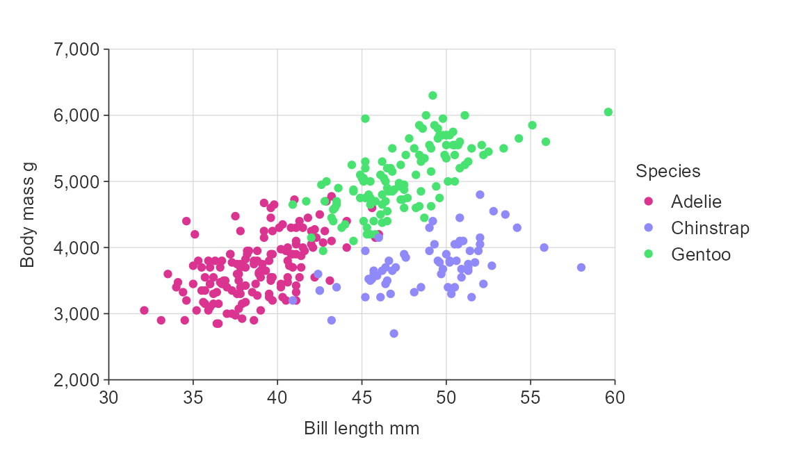

Overview
In simplevis, users define the following to adjust colours:
- Always define the colours to use via the
palargument - If colouring by a variable, use a
*_color*_col_facetfunction, and define thecol_var - If the
col_varis numeric, thecol_methodofbinorquantile, and thecol_cutsto use.
1. Always define the colours to use via the pal argument
The colour palette can be changed from the default viridis colours by providing a character vector of hex codes to the pal argument.
gg_point(penguins, bill_length_mm, body_mass_g, pal = "#e7298a")

Users can get access to a large amount of colour palettes through the pals package.
2. If colouring by a variable, use a *_col or *_col_facet function, and define the col_var
To colour by a variable, use a *_col function
gg_point_col(penguins, bill_length_mm, body_mass_g, species, pal = c("#1B9E77", "#D95F02", "#7570B3"))

3. If colouring by a numeric variable, define the col_method and col_cuts
All simplevis *_col and *_col_facet functions support colouring by a categorical variable.
In addition, sf and point *_col and *_col_facet functions support colouring by a numeric variable.
You do this by specifying whether you want to do this by:
- defining whether the col_method is to be by
binorquantile - defining a vector or col_cuts. These should be between 0 and infinity (
Inf) forbinand between 0 and 1 forquantile
plot_data <- ggplot2::diamonds %>% slice_sample(prop = 0.01) plot_data #> # A tibble: 539 x 10 #> carat cut color clarity depth table price x y z #> <dbl> <ord> <ord> <ord> <dbl> <dbl> <int> <dbl> <dbl> <dbl> #> 1 0.9 Good D VVS1 62.9 58 8239 6.01 6.1 3.81 #> 2 1.06 Very Good F IF 60.6 56 9433 6.62 6.69 4.03 #> 3 0.3 Ideal H IF 60.8 56 1013 4.37 4.35 2.65 #> 4 0.3 Ideal E VVS1 61.4 56 895 4.33 4.37 2.67 #> 5 1.03 Ideal G VS1 61.3 56 7648 6.52 6.5 3.99 #> 6 0.91 Ideal F SI2 60.3 57 3763 6.26 6.34 3.8 #> 7 0.62 Ideal F SI2 62 58 1446 5.44 5.49 3.39 #> 8 0.72 Premium F SI1 59.3 60 2030 5.91 5.86 3.49 #> 9 0.51 Premium F VS1 61.7 58 1971 5.11 5.07 3.14 #> 10 0.31 Very Good G VS1 62.7 54 542 4.35 4.36 2.73 #> # … with 529 more rows gg_point_col(plot_data, x_var = carat, y_var = price, col_var = z, col_method = "quantile", col_cuts = c(0, 0.25, 0.5, 0.75, 1))

gg_point_col(plot_data, x_var = carat, y_var = price, col_var = z, col_method = "bin", col_cuts = c(0, 1, 2, 3, 4, 5, Inf))